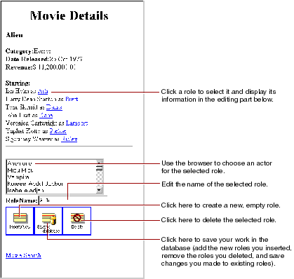

Table of Contents
Table of Contents  Next Section
Table of Contents
Next Section
Table of Contents  Previous Section
Previous Section

Many of the features in this page are similar to features in the Main page, but in this section you perform by hand the tasks the wizard performed for you to create Main. Already you've learned how to create a WODisplayGroup variable and how to bind it to dynamic elements. In this section you'll:
Table of Contents Next Section